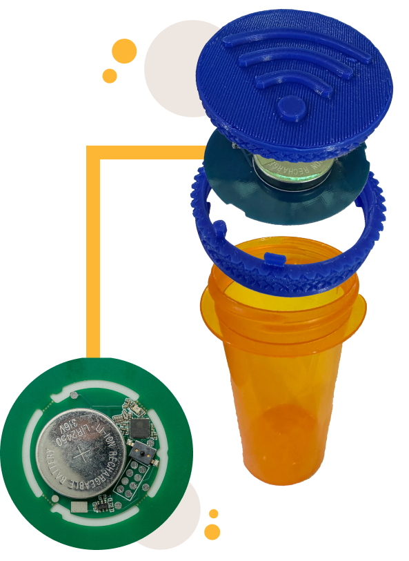

The cap comes in two interlocking plastic halves, a ring and a lid, which snap together, and in between, one of the most advanced circuit boards known to man, which “floats” between a “down” position resting on the ring (when removed from the bottle) and an “up” position (when screwed onto the bottle). Unlike other offerings, the circuit board itself contacts the rim of the bottle when the device is closed, pushing the plunger of a microswitch up against the lid, making the entire assembly very simple but also very reliable. A large coin cell battery and a brilliantly designed radio frequency circuit allow the device hundreds of cycles before it needs to be replaced. When used correctly, a user never notices it.
Although the battery is a lithium-ion chemistry and can be recharged in theory, medication contamination risk, performance concerns, and continued improvements, coupled with the very low cost of manufacture, mean that recycling these pill caps is a better option for everybody, rather than trying to reuse them or sending them to landfills.



Every time it is opened, PillCall chirps over a customer’s Wi-Fi to the internet to the PillCall server in a data center, where the server updates a database, and then dutifully combs through that database and compares it against the user’s times to find situations where the bottle should have been opened but wasn’t. When it finds a match, it sends out an SMS text message (to up to 5 different numbers). When the server finds situations where the bottle should not have been opened yet was (like five minutes after the first time), it sends out a different SMS text message.
Other than teaching a microchip your Wi-Fi credentials, the system is deceptively simple. Through using an app, a new or existing cap can be programmed with the Wi-Fi credentials for wherever the medication is stored. The app is also used to set reminder times and days.
Although there are analytics to let the company know when your battery is about to die and to thus send a replacement cap, one of the greatest philosophies of PillCall is that the company doesn’t know and doesn’t care what kind of pills are being taken. Big Pharma loves the idea of pushing “medication compliance” and selling more people more pills, and PillCall’s pledge is to keep Big Pharma out of our data.
As far as what we’re concerned, that’s part of what people are paying for with their annual fees and it's something we all want for ourselves: something to help us out and improve our lives, instead of making us the product, which is what Google does.